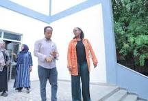

Our Esteemed Partners
We are proud to work with a variety of organizations, institutions, and individuals who share our commitment to development and growth in the Dire Dawa region.
Our Partners

Types of Partnerships
- Financial Partners: Organizations providing monetary support for our projects.
- Technical Partners: Partners offering technical expertise and resources.
- Operational Partners: Collaborators working alongside us in project implementation and community outreach.
How We Collaborate
Each partner plays a unique role in the success of our initiatives, from financial contributions to hands-on involvement in various community-driven projects.
Case Study: Sustainable Agriculture Initiative
This initiative is made possible through the combined efforts of our financial and technical partners, enabling us to reach thousands of farmers in the region.
Become a Partner
If you'd like to join us in making a lasting impact, we'd love to collaborate with you. Fill out the form or contact us to learn more.
What Our Partners Say
"Working with DDDA has been an enriching experience. Their commitment to community development aligns with our values."
- Partner 1
"DDDA's work has had a remarkable impact on local infrastructure, and we are proud to be part of their efforts."
- Partner 2
Impact Reports
Download our latest impact reports to see the results of our partnerships: